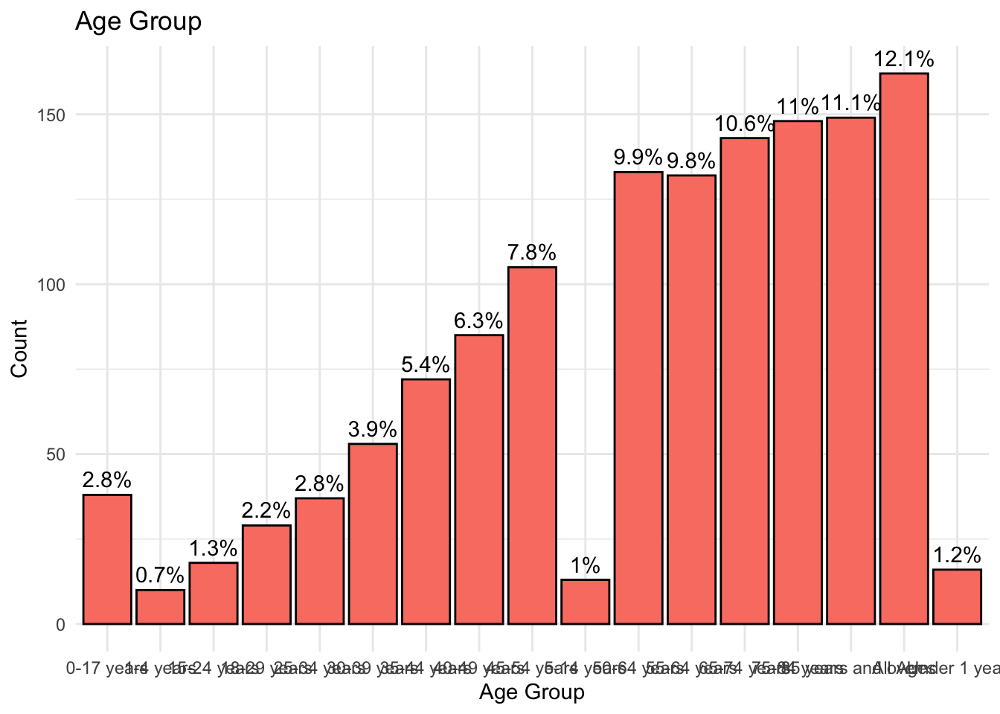
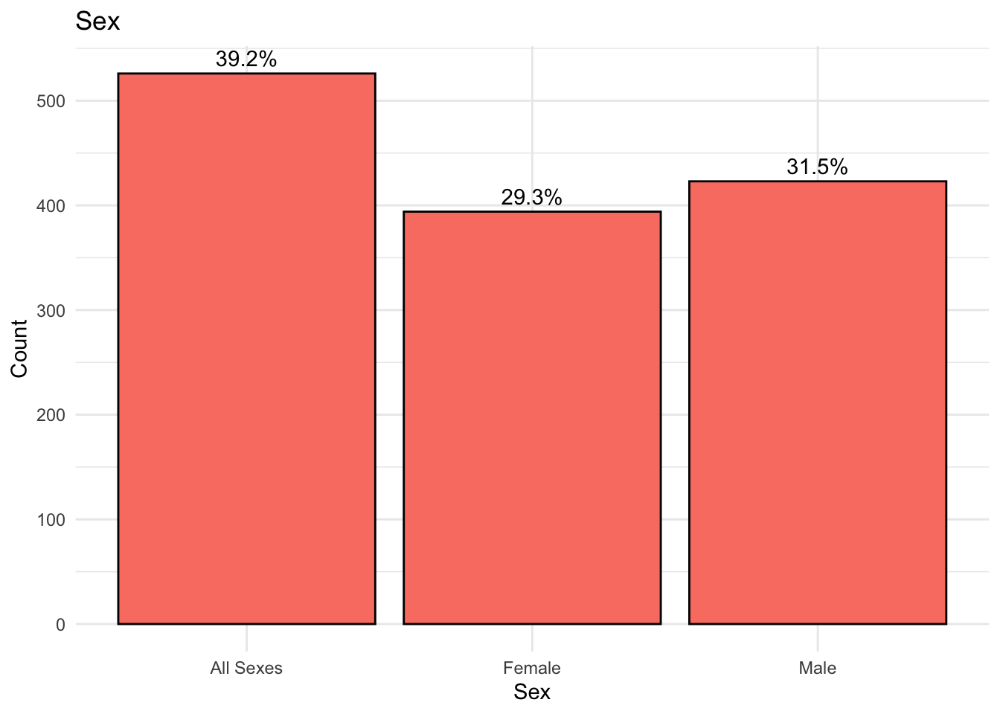
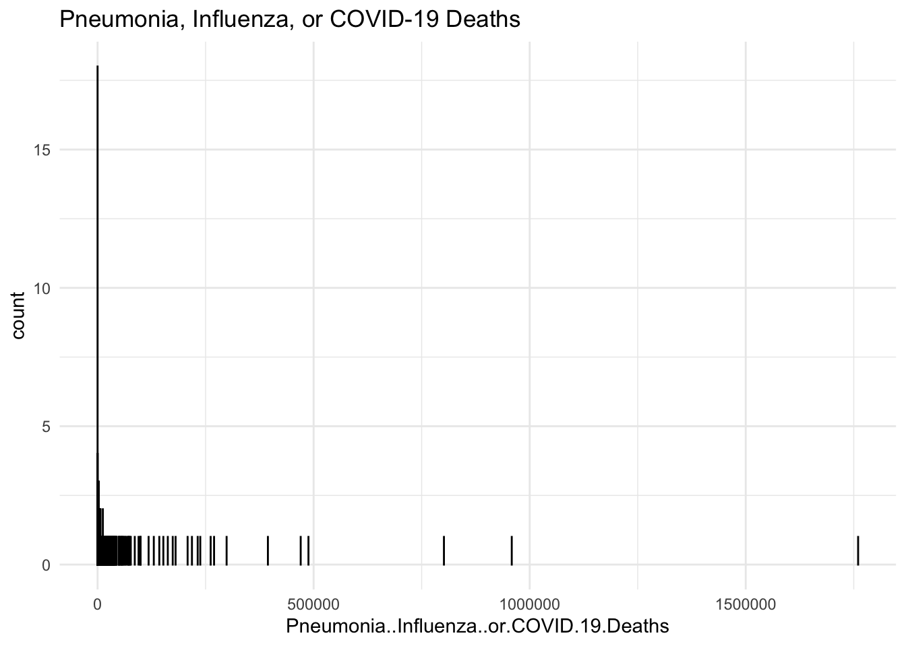
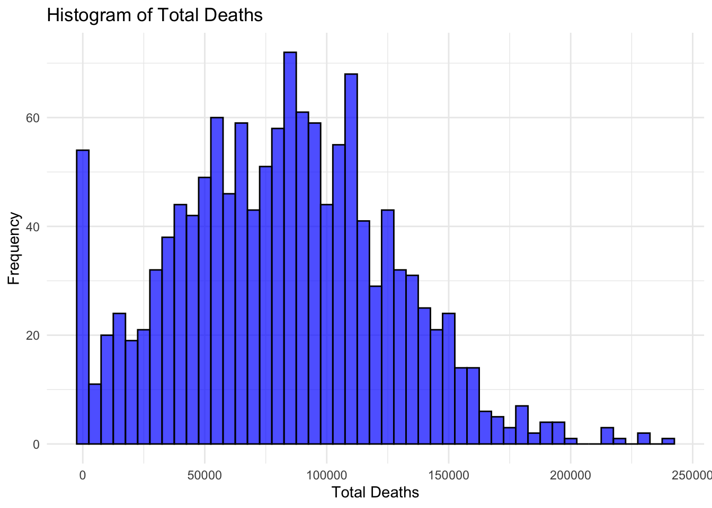
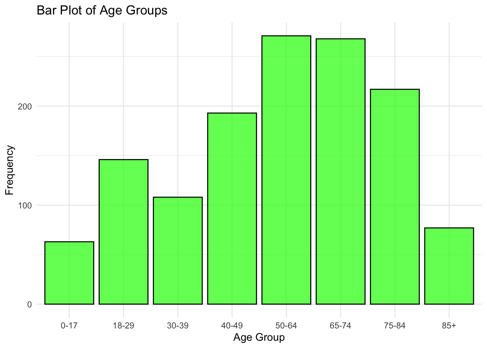

The following object is masked from 'package:gridExtra':
combine
The following objects are masked from 'package:stats':
filter, lag
The following objects are masked from 'package:base':
intersect, setdiff, setequal, union
0.2 Importing data
# This chunk is used to import that data.# Define the location of the data filedata_location <- here::here("cdcdata-exercise", "cdcdata_sample.csv")# Read the CSV file into a dataframecdcdata <-read_csv(data_location)
Rows: 1343 Columns: 12
── Column specification ────────────────────────────────────────────────────────
Delimiter: ","
chr (7): Data As Of, Start Date, End Date, Group, State, Sex, Age Group
dbl (5): COVID-19 Deaths, Total Deaths, Pneumonia Deaths, Influenza Deaths, ...
ℹ Use `spec()` to retrieve the full column specification for this data.
ℹ Specify the column types or set `show_col_types = FALSE` to quiet this message.
# View the first few rows of the dataframehead(cdcdata)
# A tibble: 6 × 12
`Data As Of` `Start Date` `End Date` Group State Sex `Age Group`
<chr> <chr> <chr> <chr> <chr> <chr> <chr>
1 09/27/2023 01/01/2020 09/23/2023 By Total United States All S… All Ages
2 09/27/2023 01/01/2020 09/23/2023 By Total United States All S… Under 1 ye…
3 09/27/2023 01/01/2020 09/23/2023 By Total United States All S… 0-17 years
4 09/27/2023 01/01/2020 09/23/2023 By Total United States All S… 1-4 years
5 09/27/2023 01/01/2020 09/23/2023 By Total United States All S… 5-14 years
6 09/27/2023 01/01/2020 09/23/2023 By Total United States All S… 15-24 years
# ℹ 5 more variables: `COVID-19 Deaths` <dbl>, `Total Deaths` <dbl>,
# `Pneumonia Deaths` <dbl>, `Influenza Deaths` <dbl>,
# `Pneumonia, Influenza, or COVID-19 Deaths` <dbl>
1 Exploring the data
The dataset I selected is ‘Provisional COVID-19 Deaths by Sex and Age’ from the CDC website. The dataset details deaths involving COVID-19, pneumonia, and influenza reported to NCHS by sex, age group, and jurisdiction of occurrence. I took a sample of this dataset, it originally had 138K entries that were grouped by how they were collected (by month, by year, by total), I took the ‘By Total’ group and dropped NA entries, in turn creating a dataset with 1305 entries.
Below is a table describing the variables I will be using from the dataset:
# This chunk will be used to clean the data. The data was cleaned prior, we really just need to drop the columns we arent using.# Removing unused columnscdcdata$`Data As Of`<-NULLcdcdata$`Start Date`<-NULLcdcdata$`End Date`<-NULLcdcdata$Group <-NULLnames(cdcdata) <-make.names(names(cdcdata))
1.2 Exploratory Analysis
1.2.1 Summary()
summary(cdcdata)
State Sex Age.Group COVID.19.Deaths
Length:1343 Length:1343 Length:1343 Min. : 0
Class :character Class :character Class :character 1st Qu.: 528
Mode :character Mode :character Mode :character Median : 1547
Mean : 7597
3rd Qu.: 4344
Max. :1146774
Total.Deaths Pneumonia.Deaths Influenza.Deaths
Min. : 10 Min. : 0 Min. : 0.0
1st Qu.: 7590 1st Qu.: 537 1st Qu.: 16.0
Median : 17862 Median : 1554 Median : 36.0
Mean : 81653 Mean : 7705 Mean : 150.4
3rd Qu.: 45996 3rd Qu.: 4171 3rd Qu.: 87.5
Max. :12303399 Max. :1162844 Max. :22229.0
Pneumonia..Influenza..or.COVID.19.Deaths
Min. : 0.0
1st Qu.: 841.5
Median : 2385.0
Mean : 11629.8
3rd Qu.: 6529.5
Max. :1760095.0
plots should include percentages if categorical, for continuous, plot and then summarize its mean and standard dev
# Calculate counts and percentages for Age Groupcdcdata_summary <- cdcdata %>%group_by(Age.Group) %>%summarise(count =n()) %>%mutate(percentage = count /sum(count) *100)# Plot with percentage labelsggplot(cdcdata_summary, aes(x = Age.Group, y = count)) +geom_bar(stat ="identity", fill ="salmon", color ="black") +geom_text(aes(label =paste0(round(percentage, 1), "%")), vjust =-0.5) +labs(title ="Age Group", x ="Age Group", y ="Count") +theme_minimal()

# Calculate counts and percentages for Sexcdcdata_summary <- cdcdata %>%group_by(Sex) %>%summarise(count =n()) %>%mutate(percentage = count /sum(count) *100)# Plot with percentage labelsggplot(cdcdata_summary, aes(x = Sex, y = count)) +geom_bar(stat ="identity", fill ="salmon", color ="black") +geom_text(aes(label =paste0(round(percentage, 1), "%")), vjust =-0.5) +labs(title ="Sex", x ="Sex", y ="Count") +theme_minimal()

ggplot(cdcdata, aes_string(x ="Pneumonia..Influenza..or.COVID.19.Deaths")) +geom_bar(fill ="salmon", color ="black") +labs(title ="Pneumonia, Influenza, or COVID-19 Deaths") +theme_minimal()
Warning: `aes_string()` was deprecated in ggplot2 3.0.0.
ℹ Please use tidy evaluation idioms with `aes()`.
ℹ See also `vignette("ggplot2-in-packages")` for more information.

ggplot(cdcdata, aes_string(x ="Influenza.Deaths")) +geom_histogram(binwidth =1, fill ="salmon", color ="black") +labs(title ="Influenza Deaths") +theme_minimal()
I had some issues finding a dataset that I wanted to use, if this dataset gives you any trouble when attempting to replicate it synthetically, let me know.
2 Making synthetic data
This section contributed by Nicholas Stevenson
To create the synthetic dataset the prompt I used was: “Create a dataset replicating an already exisiting dataset in R studio, The variables I’d like replicate is ‘State’(character), ‘Sex’(character), ‘Age.Group’(character), ‘Covid.19.Deaths’(number), ‘Total.Deaths’(number), ‘Pneumonia.Deaths’(number), ‘Influenza.Deaths’(number). There are 1343 observations.”
I followed this was a series of descriptive statements by referencing the mean and standard deviation of the original data as well as referencing the original charts and whether they were normal or skewed.
set.seed(123) # for reproducibility# Define the variablesstates <-c("Alabama", "Alaska", "Arizona", "Arkansas", "California", "Colorado", "Connecticut", "Delaware", "Florida", "Georgia", "Hawaii", "Idaho", "Illinois", "Indiana", "Iowa", "Kansas", "Kentucky", "Louisiana", "Maine", "Maryland", "Massachusetts", "Michigan", "Minnesota", "Mississippi", "Missouri", "Montana", "Nebraska", "Nevada", "New Hampshire", "New Jersey", "New Mexico", "New York", "North Carolina", "North Dakota", "Ohio", "Oklahoma", "Oregon", "Pennsylvania", "Rhode Island", "South Carolina", "South Dakota", "Tennessee", "Texas", "Utah", "Vermont", "Virginia", "Washington", "West Virginia", "Wisconsin", "Wyoming")sexes <-c("Male", "Female", "All Sexes")sex_probs <-c(0.315, 0.293, 0.392)age_groups <-c("0-17", "18-29", "30-39", "40-49", "50-64", "65-74", "75-84", "85+")age_group_probs <-c(0.05, 0.10, 0.10, 0.15, 0.20, 0.20, 0.15, 0.05) # Skewed probabilitiesn <-1343# Generate the datasetsynthetic_data <-tibble(State =sample(states, n, replace =TRUE),Sex =sample(sexes, n, replace =TRUE, prob = sex_probs),Age.Group =sample(age_groups, n, replace =TRUE, prob = age_group_probs),Covid.19.Deaths =rnorm(n, mean =7596.808, sd =43164.85),Total.Deaths =rnorm(n, mean =81653.12, sd =45491.2),Pneumonia.Deaths =rnorm(n, mean =7705.152, sd =43860.05),Influenza.Deaths =rnorm(n, mean =150.4058, sd =826.2635))# Ensure non-negative values for death countssynthetic_data <- synthetic_data %>%mutate(Covid.19.Deaths =ifelse(Covid.19.Deaths <0, 0, Covid.19.Deaths),Total.Deaths =ifelse(Total.Deaths <0, 0, Total.Deaths),Pneumonia.Deaths =ifelse(Pneumonia.Deaths <0, 0, Pneumonia.Deaths),Influenza.Deaths =ifelse(Influenza.Deaths <0, 0, Influenza.Deaths) )# Print the first few rows of the synthetic datasethead(synthetic_data)
# A tibble: 6 × 7
State Sex Age.Group Covid.19.Deaths Total.Deaths Pneumonia.Deaths
<chr> <chr> <chr> <dbl> <dbl> <dbl>
1 New Mexico All Sexes 40-49 21990. 125855. 0
2 Iowa Female 40-49 8211. 18995. 69539.
3 Indiana Female 50-64 0 160376. 0
4 Arizona Female 65-74 0 81422. 13260.
5 Tennessee Female 18-29 24505. 46175. 15107.
6 Wyoming Male 40-49 16643. 99738. 0
# ℹ 1 more variable: Influenza.Deaths <dbl>
#Histogram of Total Deathsggplot(synthetic_data, aes(x = Total.Deaths)) +geom_histogram(binwidth =5000, fill ="blue", color ="black", alpha =0.7) +labs(title ="Histogram of Total Deaths", x ="Total Deaths", y ="Frequency") +theme_minimal()

#Frequency table for Age Groupage_group_table <-table(synthetic_data$Age.Group)print(age_group_table)
#Bar Plot of Age Groupsggplot(synthetic_data, aes(x = Age.Group)) +geom_bar(fill ="green", color ="black", alpha =0.7) +labs(title ="Bar Plot of Age Groups", x ="Age Group", y ="Frequency") +theme_minimal()

# Calculate percentage of counts by Sexsex_counts <- synthetic_data %>%group_by(Sex) %>%summarise(Count =n()) %>%mutate(Percentage = Count /sum(Count) *100)
# Create the bar chartggplot(sex_counts, aes(x = Sex, y = Percentage, fill = Sex)) +geom_bar(stat ="identity", color ="black", alpha =0.7) +labs(title ="Percentage of Counts by Sex", x ="Sex", y ="Percentage (%)") +scale_y_continuous(labels = scales::percent_format(scale =1)) +theme_minimal() +theme(legend.position ="none")